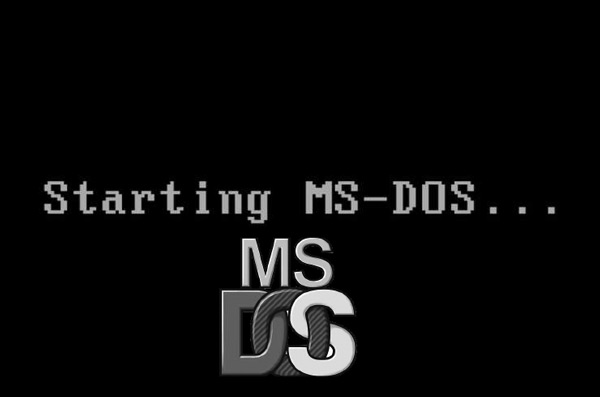
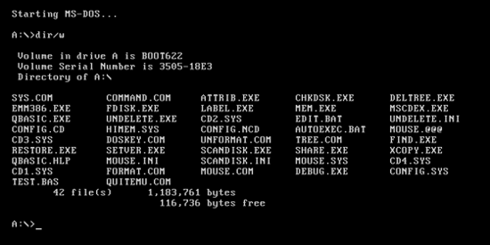
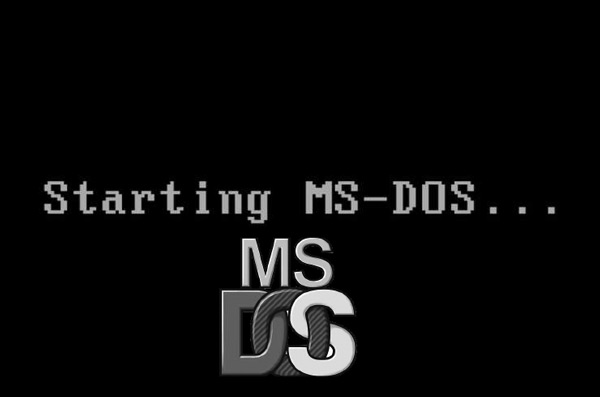
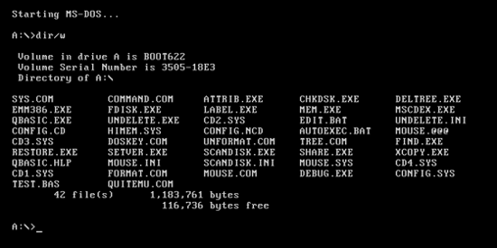

MS DOS
MS-DOS, acrônimo de Microsoft Disk Operating System, é um sistema operacional comprado pela Microsoft para ser usado na linha de computadores IBM PC. O dono e criador original do projeto QDOS - Quick and Dirty Operating System é a empresa Seattle Computer Systems, que foi inicialmente uma tentativa de criar um concorrente do estabelecido Sistema Operacional CP/M que rodasse no recém-lançado processador 8086 da Intel.
História
Dentro da História da computação é considerado por alguns como sendo o produto que decidiu o destino da então minúscula Microsoft, o MS-DOS foi sucedido por duas linhas de produtos: o OS/2 e o Windows 3.11. O desenvolvimento destes sistemas operacionais pode ser considerado como a evolução da informática nas décadas de 1980 e 1990.
Foi originalmente desenvolvido por Tim Paterson da Seattle Computer Products sob o nome de QDOS , sendo uma variação do CP/M-80 da Digital Research.
Também não rodava nas CPUs 8080 exigidas pelo CP/M-80. A Microsoft licenciou-o da SCP, fez algumas modificações e licenciou-o posteriormente à IBM para seu novo 'PC' usando a CPU 8088 , e a vários outros fabricantes de hardware, vendido então como MS-DOS.
A empresa Digital Research produziu um sistema compatível, conhecido como «DR-DOS», que foi tomado pela Novell . Este se tornou o «OpenDOS» durante certo tempo, após a venda de uma divisão importante da Novell feita a Caldera International, atual SCO. Mais tarde, a divisão da Caldera se separou, tornando-se a Lineo , que por sua vez vendeu o DR-DOS a recém-criada Device Logics, atualmente DRDOS Inc.
Em 25 de março de 2014, a Microsoft disponibilizou o código para SCP MS-DOS 1.25 e uma mistura de Altos MS-DOS 2.11 e TeleVideo PC DOS 2.11 ao público sob o Contrato de Licença de Pesquisa da Microsoft, que disponibiliza o código-fonte, mas não é de código aberto conforme definido pelos padrões da Open Source Initiative ou da Free Software Foundation. Mais tarde, a Microsoft iria licenciar novamente o código sob a Licença MIT em 28 de setembro de 2018, tornando essas versões software livre.
Execução de Programas e Aplicações
Em seu papel de intermediário entre a CPU e um programa de aplicação, o MS-DOS executa tarefas importantes. Ele obtém o programa que você deseja executar e coloca-o em RAM, além de ajudar o programa a executar E/S. Quando o usuário comunica ao MS-DOS que deseja executar determinado programa, ele encontra o programa no disco, carrega-o em RAM e mostra à CPU o local do início do programa.
Discos e Arquivos
Quando dados são guardados em disco, eles são gravados em arquivos. As informações em arquivos podem consistir em texto, dados, programas, etc. O arquivo pode ter qualquer tamanho, limitado apenas pelo espaço disponível em disco.
Os arquivos são armazenados em discos ou disquetes. Um disco (ou disco rígido, ou ainda "Winchester"), é uma peça circular de material rígido coberto por um material magnético (podem ser várias peças como essa agrupadas em um único "Winchester"); um disquete (ou disco floppy) é uma versão flexível do disco, com capacidade menor.
Para recuperar arquivos do disco, o cabeçote percorre o mesmo até o local onde está armazenado o arquivo. O cabeçote lê primeiramente o diretório, onde estão informações sobre o arquivo. A partir daí e da File Allocation Table, o DOS descobre em que local do disco o arquivo se encontra, o que é determinado por trilhas e setores, como se fosse os eixos X e Y do disco. As trilhas são círculos concêntricos e os setores são como fatias do disco, como mostra a figura ao lado. Uma cluster, em linguagem técnica, é a intersecção de um setor com uma trilha. Um cluster possui um número fixo de bytes e um arquivo pode ocupar um ou mais clusters, sequencialmente ou não. É esse o papel da File Allocation Table, ou simplesmente FAT: mostrar ao DOS onde se encontram as diversas partes do arquivo espalhadas pelo disco.
Versões
As seguintes versões do MS-DOS foram lançadas ao público:
A primeira versão, PC-DOS 1.0, foi lançada em Agosto de 1981. Ela suportava até 256 kB de RAM e dois disquetes de 160 kB 5.25" de face única. Suas principais características era ser um sistema monousuário e monotarefa (monoprocessador).
Em Maio de 1982, o PC-DOS 1.1 trouxe suporte aos disquetes de 320 kB dupla-face.
PC-DOS 2.0 e MS-DOS 2.0, lançados em Março de 1983, foram as primeiras versões a suportar o PC/XT e drives de discos fixos (comumente chamados de drives de disco rígido). A capacidade dos disquetes foi elevada a 180 kB (face única) e 360 kB (dupla face) com o uso de nove setores por trilha em vez de oito. A versão 2.0 também permitiam a um programa carregar e rodar subprogramas e overlays de programa(isso lhes dá um grau de independência do programa que os iniciou).
Ao mesmo tempo, a Microsoft anunciou sua intenção de criar uma GUI (Graphical User Interface - Interface Gráfica de usuário) para o DOS. Sua primeira versão, Windows 1.0, foi anunciada em Novembro de 1983, mas estava incompleta e não interessou a IBM. Em Novembro de 1985, a primeira versão completa, Windows 1.01, foi então lançada.
MS-DOS 3.0, lançado em Setembro de 1984, suportava inicialmente disquetes de 1,2 MB e discos rígidos de 32 MB. Incluiu também códigos de erro mais estendidos, de forma que permitia que os programas obtivessem uma explicação mais detalhada do que aconteceu de errado, quando um erro surge.
MS-DOS 3.1, lançado em Novembro do mesmo ano, introduziu o suporte a redes, com serviços que permitiam o "travamento" e "destravamento" do acesso a todas as partes de um arquivo, o que tornava seguro e prático para vários computadores compartilharem o mesmo arquivo sem interferência um do outro.
MS-DOS 3.2, lançado em Abril de 1986, foi o primeiro lançamento comercial do MS-DOS. Ele adicionou suporte aos disquetes de 720 kB/3.5". As versões anteriores foram vendidas apenas aos fabricantes de computadores que embutiam-no em seus produtos, porque os sistemas operacionais, até então, eram considerados parte de um computador, não um produto independente. Ele também incluiu o suporte para que o sistema a usasse linguagens diferentes do inglês americano.
MS-DOS 3.3, lançado em Abril de 1987, introduziu os discos lógicos. Um disco físico maior que 32 MB poderia ser dividido em várias partições, consideradas como discos independentes pelo sistema operacional. Também foi adicionado suporte aos disquetes de 1,44 MB/3.5" e o suporte para até quatro portas seriais reconhecidas pelo sistema.
MS-DOS 4.0, lançado em Julho de 1988, suportava discos de até 2 GB, sem a necessidade de se criar partições, (discos cujos tamanhos variavam, geralmente, entre 40 e 60 MB na época), e teve a adição de uma shell chamada DOSSHELL. Outrasshells, como a Norton Commander e a PCShell, existiram na época. Em Novembro de 1988, a Microsoft corrigiu muitosdefeitos em um update, MS-DOS 4.01.
MS-DOS 5.0, lançado em Abril de 1991, incluiu o interpretador (compilador) de BASIC em tela cheia, o QBasic, também trazendo um editor de texto em tela cheia, (anteriormente, havia apenas um editor linha-a-linha, edlin). Um utilitário de cache de disco (SmartDrive), capacidade de undelete, e outras melhorias foram incluídas nessa versão. Como houve problemas graves com alguns utilitários de disco, mais tarde, no mesmo ano, foi lançado o MS-DOS 5.01, com as devidas correções.
Em Março de 1992, a Microsoft lançou o Windows 3.1, que se tornou a primeira versão popular do sistema Microsoft Windows, que somou mais de um milhão de cópias vendidas.
Em Março de 1993, o MS-DOS 6.0 foi lançado. Seguido pela concorrente Digital Research, a Microsoft adicionou um utilitário de compressão de disco chamado DoubleSpace. Nessa época, os discos rígidos mais comuns tinham em torno de 200 a 400 MB, e muitos usuários necessitavam seriamente de mais espaço em disco. O MS-DOS 6.0 também trouxe o desfragmentador de disco DEFRAG, o MSBACKUP para criação de backups, otimização de memória com o MEMMAKER, e um princípio de protetor antivírus,MSAV.
Como suas duas antecessoras, a versão 6.0 mostrou ter diversas falhas. Devido a reclamações sobre perda de dados, a Microsoft lançou uma versão atualizada, MS-DOS 6.2, com um utilitário DoubleSpace melhorado, um novo utilitário de checagem de disco, SCANDISK (similar ao fsck do Unix), além de outras melhorias.
A versão seguinte, MS-DOS 6.21 (lançada em Março de 1994), surgiu devido a problemas legais. A empresa Stac Electronics acionou judicialmente a Microsoft, que foi forçada a remover o DoubleSpace de seu sistema operacional.
Em Maio de 1994, a Microsoft lançou o MS-DOS 6.22, com outro pacote de compressão de disco, DriveSpace, licenciado da VertiSoft Systems.
O MS-DOS 6.22 foi a última versão stand-alone do sistema disponível ao público. Ele foi retirado do mercado pela Microsoft em 30 de Novembro de 2001. Veja o (em inglês) Microsoft Licensing Roadmap.
A Microsoft também lançou as versões de 6.23 a 6.25 para bancos e organizações militares Estadunidenses. Estas incluíam já suporte a partições FAT32 . A partir de então, o MS-DOS passou a existir apenas como uma parte dos sistemas Windows 9x (95, 98 e Me). A versão original do Microsoft Windows 95 incorporou o MS-DOS versão 7.0.
Imagens
 Logo do MS DOS

Tela de início do MS DOS

Tela principal do MS DOS
Logo do MS DOS

Tela de início do MS DOS

Tela principal do MS DOS